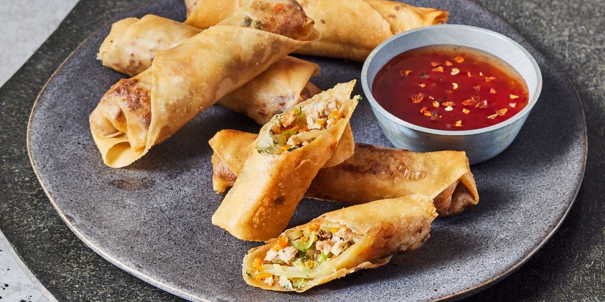

Lumpia

Traditional Filipino Lumpia
This is a traditional Filipino recipe for lumpia, or fried spring rolls.
They're made with paper-thin lumpia wrappers and filled with a savory
mixture of ground pork, cabbage, and other vegetables. Serve lumpia as a
side dish or appetizer with a sweet chili dipping sauce.
Ingredients
- 1 tablespoon vegetable oil
- 1 pound ground pork
- ½ cup chopped onion
- 2 cloves garlic, crushed
- ½ cup minced carrots
- ½ cup chopped green onions
- ½ cup thinly sliced green cabbage
- 2 tablespoons chopped fresh cilantro (Optional)
- 1 teaspoon ground black pepper
- 1 teaspoon salt
- 1 teaspoon garlic powder
- 1 teaspoon soy sauce
- 30 lumpia wrappers
- 2 cups vegetable oil for frying, or as needed
Ingredients
- Make the filling
- Assemble the lumpia
- Fry the lumpia